OWASP CTF 2019 Guatemala - Writeup

Aqui se listan algunas soluciones de los diferentes retos del CTF realizado en el OWASP Guatemala.
SCOREBOARD


TRIVIA
Dark Army
whiterose
Friends
angela_moss
E-corp
flag{fsociety00.dat}
Fsociety
mr robot
CRYPTO
BASE
Decodificamos el mensaje en base32.
Comando:
echo MZWGCZ33MJQXGZJTGJPWS427OZSXE6K7MJXXEZLEEF6Q====|base32 -d
flag{base32_is_very_bored!}
PI PI PI
Utilizando google buscamos una de las strings (“di-dah-dah”) y encontramos que es codigo morse utilizando di y dah que representan los sonidos. Codigo morse.
dah-dah-dah di-dah-dah di-dah di-di-dit di-dah-dah-dit dah-dah-dah-dah-dah di-dah-dah-dah-dah di-di-dah-dah-dah di-di-di-dah-dah di-di-di-di-dah di-di-di-di-dit dah-di-di-di-dit dah-dah-di-di-dit dah-dah-dah-di-dit dah-dah-dah-dah-dit
Escribí un pequeño script en python utilizando la tabla de valores descritos en la pagina(Codigo morse).
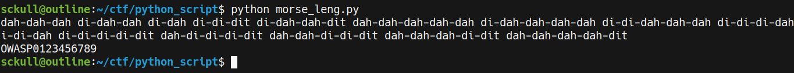
Codigo: Morse_lang.py
flag: OWASP0123456789
BRAIN
Brainfuck es un lenguaje que se representa por medio de los caracteres ><+-.,[] para obtener la flag se utilizo un decoder online. dcode.fr/brainfuck-language
++++++++++[>+>+++>+++++++>++++++++++<<<<-]>>>>++.++++++.-----------.++++++.++++++++++++++++++++.-------------------------.++++++++++++++++.-----------------.<<+++++++++++++++++++.>>+++++++++++++.--------.+++++++++++++++.------------------.++++++++.------------.++++++++++++++++++++++++.----------------------.++++++++++++++++++.--------------------.+++++++++.<<++.>>++++++++++.<<.>>+++++++++++.

flag{bra1nfuck_was_h3r3}
HTP
Nos dan lo que parece una contraseña para poder obtener que tipo de hash es utilizamos hashcat, de igual forma para desencriptar la contraseña la misma herramienta.
Grecie:$apr1$9zQh77LH$cbQwfDnON90qz0mhYg1Yv.
https://hashcat.net/wiki/doku.php?id=example_hashes [1600]
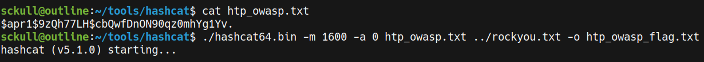 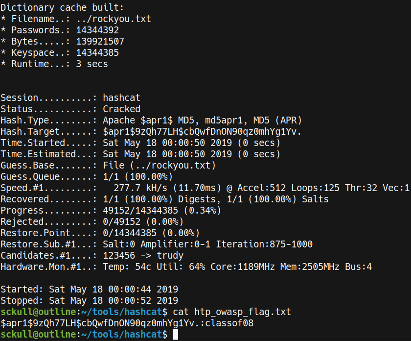
Decrypted:
$apr1$9zQh77LH$cbQwfDnON90qz0mhYg1Yv.:classof08
flag{classof08}
TURIN
En este reto nos dan un string y una imagen, con el titulo se puede concluir que pertenece a la maquina de turing y la imagen pertenece a la configuracion que debe de tener la maquina para poder obtener el mensaje oculto en el string. Utilizamos la pagina de cryptii.com para obtener nuestra flag.
text:ixqajtrjaq

flag{heilhitler}
IMPA
Para este reto nos dan una pista, al investigar acerca del personaje nos encontramos en la wiki de zelda el lenguaje Sheikah, utilizamos imagenes de google para poder obtener nuestra bandera tambien existe un traductor en dcode.fr/sheikah-language
Wiki de Zelda: Sheikah_Language
Reto:
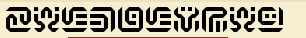
Impa:

flag{ZELDALOVEU}
BATMAN
Utilizamos motherreff.in para decodificar la flag.
AABABABABAAAAAAAABBA{AAAABAAAAABAABAABABBAAAAAABBAAAAABAAABBBABAAAABBBAAABAABAAAAABAAABAAABAABAAAAAAABAAABBABBA}

FLAG{BATMANCHIPERISEASY}
KING
Un poco de informacion de este reto, la NSA mostro un mensaje parecido a este en un twitt, segun un post es un tipo de rompecabezas que vienen en los periodicos. Existen difrentes paginas que pueden decodificar mensajes de este tipo.
Para resolver este reto utilizamos una pagina de las listadas anteriormente.

izu gjweft yifgx izji tjluy wf yuwyu yijgiy frr vkiz jw kdu dgujt igadl j dzur jwe j hkudu fr hpaif.
izu maxy izji fvwue izu kdu dgujt igadl yifpu izu hkudu fr hpaif rgft izu hjyigx dzur vzf fnijkwue ki rgft izu rpxkwm upuhzjwi.
izu rpxkwm upuhzjwi mfi ki rgft j yatf vguyipug vzf fnijkwue ki kw izu yatf dzjthkfwyzkh fw yjiagw.
izux vuwi if yjiagw nudjayu qahkiug vjy rapp fr taijwi nujsdffwy.
izu nujsdffwy vugu rgft tjgy vzugu izu nannpx nannpuy, jw jwdkuwi rjwm izji vjy nagkue kw djtupfi pksue.
izu nannpx nannpuy djtu njdl jiug izu dpfvwy guyaggudiue zkt kw jw jwdkuwi nagkjp yhupp fr tjmkdjpwuyy.
izuw izu dfgwefm rgft suway puje jw jiijdl fr djwfuy fwif izu gayykjwy vzf guyhfweue nx ijlkwm tdefwjpey jvjx rgft dzkwj.
ykwdu dzkwj ekew'i zjsu jwxtfgu tdefwjpey izux eudkeue if nax j hkccj zai.
izu hkccj zai vjy izuw yifpuw nx j ijplkwm upuhzjwi rgft kwekj.
izu upuhzjwi vjy izu maga'y jwe zu pksue ji izu jyzgjt kw pfy jwmupuy.
izu upuhzjwi zje j hkm rgkuwe vzf ijamzi tjiz.
izu hkm ubhpfeue fwu ejx jwe puri izu vzfpu vfgpe vfweugkwm.
ykwdu izu hkm ubhpfeue izu lkwm hkm npjtue izu mkjwiy.
ykwdu izu mkjwiy zjiue nukwm npjtue izux pue jw jiijdl fw izu lkwm jwe ykwdu izux vugu fr dfagyu tadz nkmmug izux vugu skdifgkfay.
jriug izu mkjwiy iffl dfwigfp fr mguuwpjwe izux yijgiue rkmzikwm izu sklkwmy rgft kdupjwe.
izu fhhfwuwiy vugu uouwpx tjidzue yf izux uweue ah euyigfxkwm ujdz fizug jwe izux nudjtu ubikwdi.
izuw izu mfgkppjy yifpu izu zfwej igjkp 70'y rgft ifwx yfhgjwf izu puje mjwmyiug rgft kijpx.
ifwx yfhgjwf jdiajppx mfi izu zfwej'y rgft kwekj jwxzfv njdl if izu mfgkppjy.
izu mfgkppjy yijgiue djaykwm j galay kw izu nkm jhhpu, jdiajppx j nkm jhhpu, vzugu izux gjw fsug nkppx qfu jwe ukpuuw.
ykwdu izu rffinjpp hpjxugy vugu dzjykwm izut izu mfgkppjy zfhhue kwif izu mkjwi hujdz vkiz qjtuy vzf vjy uydjhkwm zky uskp hjguwiy.
izu yifgx uwey izugu k't yfggx if yjx nai fz vupp zux, zux, zux.
izu rpjm ky "izux jpp pksue zjhhkpx uoug jriug".
the random story that makes no sense starts off with an ice cream truck a chef and a piece of pluto the guys that owned the ice cream truck stole the piece of pluto from the pastry chef who obtained it from the flying elephant the flying elephant got it from a sumo wrestler who obtained it in the sumo championship on saturn they went to saturn because jupiter was full of mutant beavcoons the beavcoons were from mars where the bubbly bubbles an ancient fang that was buried in camelot lived the bubbly bubbles came back ater the clowns resurrected him in an ancient burial spell of magicalness then the corndog from venus lead an attack of canoes onto the russians who responded by taking mcdonalds away from china since china didn t have anymore mcdonalds they decided to buy a pizza hut the pizza hut was then stolen by a talking elephant from india the elephant was the guru s and he lived at the ashram in los angeles the elephant had a pig friend who taught math the pig exploded one day and left the whole world wondering since the pig exploded the king pig blamed the giants since the giants hated being blamed they led an attack on the king and since they were of course much bigger they were victorious after the giants took control of greenland they started fighting the vikings from iceland the opponents were eqenly matched so they ended up destroying each other and they became extinct then the gorillas stole the honda trail s from tony soprano the lead gangster from italy tony soprano actually got the honda s from india anyhow back to the gorillas the gorillas started causing a rukus in the big apple actually a big apple where they ran over billy joe and eileen since the football players were chasing them the gorillas hopped into the giant peach with james who was escaping his evil parents the story ends there i m sorry to say but oh well hey hey hey the flag is they all lived happily eqer after
Se cambio la q por una v.
they all lived happily eqer after
flag: they all lived happily ever after
SAVE ME!
Archivos .fun, Investigamos sobre la extension de estos archivos y encontramos que es un virus de tipo ransomware, el cual encripta los archivos con esa extension.
Para obtener los archivos encriptados en el archivo del reto utilizamos jigsaw.exe el cual nos permite desencriptar este tipo de archivos.
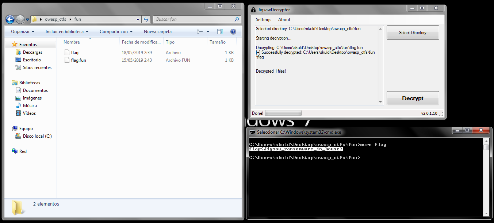
flag{Jigsaw_ransomware_in_house}
ESTEGANOGRAFIA
DATA
Utilizamos exif para ver los metadatos de la imagen y encontramos la flag.
 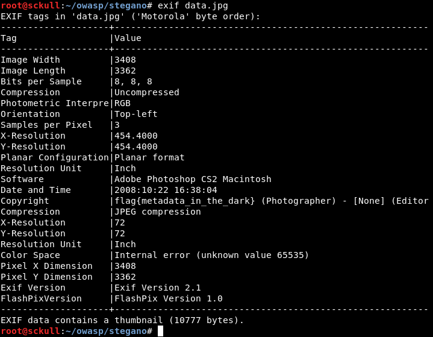
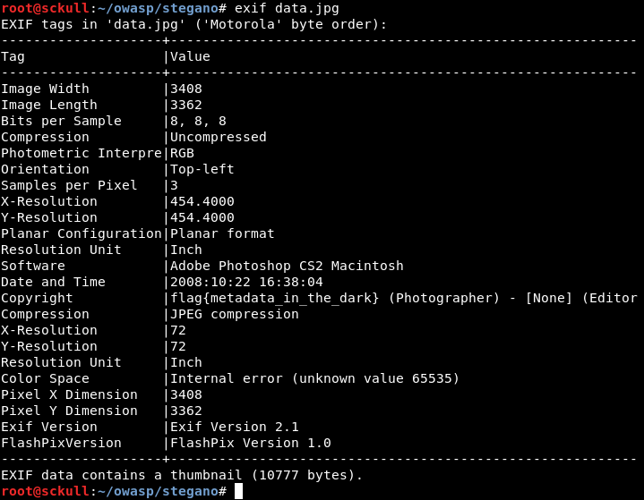
flag{metadata_in_the_dark}
MATRIX
Utilizamos inlite para decodificar la imagen online-barcode-reader/
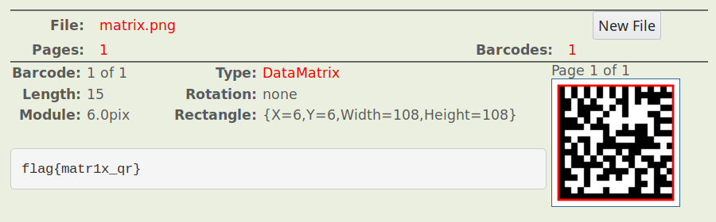
flag{matr1x_qr}
MONDRIAN
Una imagen que tiene un mensaje oculto, este lenguaje se llama piet y se encuentra en imagenes que parecen estilo abstractas. Piet Decode
Decodificamos la imagen aqui:
https://www.bertnase.de/npiet/npiet-execute.php
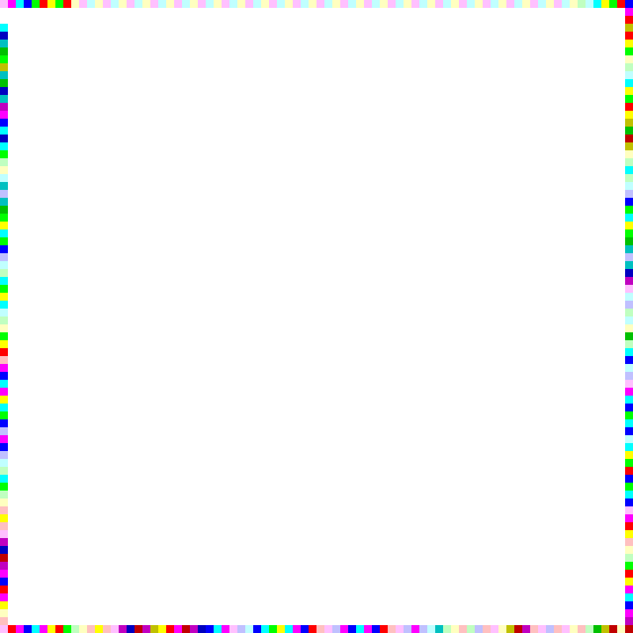

flag{p1et_programm1ng!}
HIDE
Utilizamos binwalk para extraer lo que esta en el interior de la imagen, al extraer el archivo descomprimimos de nuevo y obtenemos un archivo txt, este nos indica que esta en diferentes bases, decodificamos el mensaje en base64 y base32 para obtener la flag.
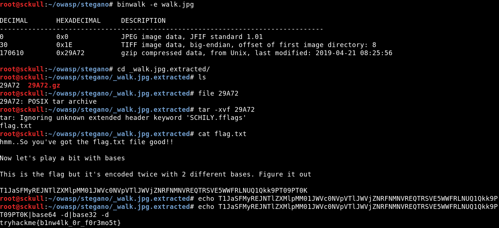
tryhackme{b1nw4lk_0r_f0r3mo5t}
REVERSING
CRACKME1
Para hacer una compilacion inversa al archivo crackme.pyc existe una herramienta llamada uncompyle2 para obtener el codigo fuente equivalente al archivo.
Comando:
uncompyle2 crackme.pyc -o crackme.py
Codigo fuente (Ordenado manualmente para obtener la flag):
import random
lr = '2'
db = 'w'
ef = 's'
ty = '3'
gh = '!'
aa = 'O'
rr = 'p'
nn = 'a'
chains = [116,104,105,115,32,105,115,32,97,32,116,114,111,108,108]
chars = []
lock_pick = random.randint(0, 1000)
lock = lock_pick * 2
password = [105,116,115,32,110,111,116,32,116,104,97,116,32,101,97,115,121]
lock = lock + 10
lock = lock / 2
auth = [107,101,101,112,32,116,114,121,105,110,103]
lock = lock - lock_pick
print lock
slither = aa + db + nn + ef + rr + gh + lr + ty
print slither
keys = [112,97,115,115,119,111,114,100,33,33]
print 'Authentication required'
print ''
user_input = raw_input('Enter your username\n')
if user_input == slither:
print 'yeeeea! correct user!'
else:
print 'Wrong username try harder'
exit()
flag: Owasp!23
CRACKME2
Utilizamos rabin2 para obtener las strings dentro del archivo bin y obtuvimos el usuario correcto.
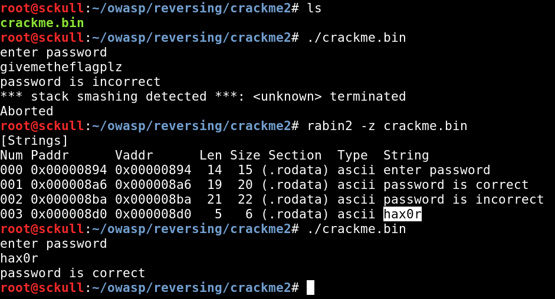
flag: hax0r
MISC
SHADOW
Un archivo que contiene la contraseña del usuario root, usamos john the ripper para obtener la ocnttraseña.

flag{toor}
REGISTER
La bandera de este reto pertenece al reto de registrarse en la plataforma. http://ctf.develsecurity.com/0x1 En hora buena por tu registro , tu premio es la flag para el reto register en la categoria misc.
flag{00010!}
Utilizamos pdfcrack y el diccionario Ashley Madison. Diccionario: https://raw.githubusercontent.com/dustyfresh/dictionaries/master/AshleyMadisonCracked.txt
Comando:
pdfcrack -f flag-protected.pdf -w AshleyMadisonCracked.txt
Contraseña: zerkalo1974
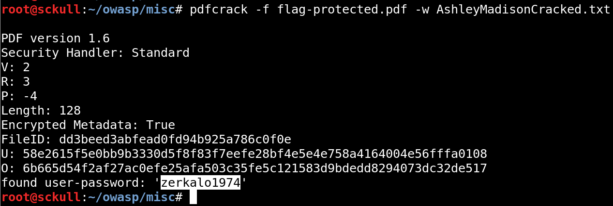
flag{pdfcrack_was_here!}
KEEP
Utilizamos keepass2john para obtener el hash y hashcat para obtener la contraseña del archivo.
$keepass$*2*60000*0*cc74b5166afe1df0757d8d208078d4d2f9fe3e331ff730b9cb5cfb94064eea50*b6d616ca2c797d4a942df786640acc92749f8005fc2b31114c0ba5b2aced9a5e*459b7fe3b1200a8b48ad9663925465c4*72cdc691f0f93f79476c83f8b1f1db44ab23ca6217048cd67bbde5e8ff76b402*1acb7f5538987791204995bc3c1ba96a254b3be85051946058b07ee6ef1b4d45
Comando hashcat:
hashcat64.bin -m 13400 keepas.txt ../rockyou.txt -o keepas_owasp.txt
Contraseña: zaq1zaq1
Utilizamos keepassx para abrir el archivo Database.kdbx.
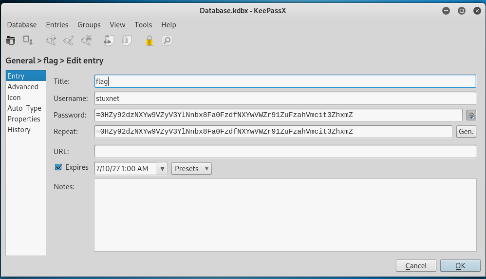
Vemos un mensaje de flag pero no aparece nuestra flag como cadena normal, el texto que aparece en el campo de password parece ser base64 invertida, invertimos el mensaje y decodificamos.
Comando:
echo =0HZy92dzNXYw9VZyV3YlNnbx8Fa0FzdfNXYwVWZr91ZuFzahVmcit3ZhxmZ |rev|base64 -d
flag{break1ng_keepas_w1th_1nsecure_password}
ZERO
Para este reto escribí un script en python y con el codigo ascii que aparece en el archivo leeme.txt generamos un codigo de barras para luego obtener la bandera en https://online-barcode-reader.inliteresearch.com/.
Codigo: https://github.com/sckull/ctf-stuff/blob/master/stego_zero.py

flag{qr_to_ascii_art}
PORT
Para este reto hicimos un escaneo de puertos con nmap a la plataforma del ctf, encontramos el puerto 1337 al visitarlo nos muestra un error con nuestra flag.
Comando:
nmap -p1-65535 ctf.develsecurity.com
PORT STATE SERVICE VERSION
22/tcp open ssh OpenSSH 7.2p2 Ubuntu 4ubuntu2.8 (Ubuntu Linux; protocol 2.0)
25/tcp filtered smtp
80/tcp open http
81/tcp open http Apache httpd 2.4.18 ((Ubuntu))
82/tcp open http Apache httpd 2.4.18 ((Ubuntu))
83/tcp open http Apache httpd 2.4.18 ((Ubuntu))
84/tcp open http Apache httpd 2.4.18 ((Ubuntu))
111/tcp open rpcbind 2-4 (RPC #100000)
1337/tcp open waste?
Mensaje al visitar la pagina.
xmp>perl: warning: Setting locale failed.
perl: warning: Please check that your locale settings:
LANGUAGE = (unset),
LC_ALL = (unset),
LANG = "es_GT.UTF-8"
are supported and installed on your system.
perl: warning: Falling back to the standard locale ("C").
Unescaped left brace in regex is deprecated, passed through in regex; marked by <!-- HERE in m/%{ --> HERE (.*?)}/ at /usr/bin/print line 528.
Error: no such file "flag{secret_in_the_port_is_null}"
flag{secret_in_the_port_is_null}
MOBILE
MOBILE
Utilizamos apktool para poder decompilar el archivo Mobile1.apk y ver el codigo que tiene dentro. Tambien podemos utilizar http://www.javadecompilers.com/ para el mismo fin.

La flag se encuentra en HelloWorldActivity.
Codigo generado por javadecompilers.
package com.example.helloworld;
import android.os.Bundle;
import com.phonegap.DroidGap;
public class HelloWorldActivity extends DroidGap {
public void onCreate(Bundle savedInstanceState) {
super.onCreate(savedInstanceState);
super.loadUrl("flag{de0fuscate_code}");
}
}
flag{de0fuscate_code}
WEB
HIDE
Para este reto buscamos directorios comunes, tambien buscamos en el codigo fuente de las paginas. http://ctf.develsecurity.com:81/admin/flag.txt
flag{http_directory_indexing}
DEFAULT
De igual forma, algunos directorios comunes. http://ctf.develsecurity.com:82/install/
flag{default_files_installation_fake_cms}
INJECT
XPATH INJECTION
Probamos con alguno de los payloads aqui descritos y obtuvimos la flag.
Payloads: XPATH_INJECTION
Payload: x' or 1=1 or 'x'='y
flag{XPATH_1NJ3CT10N}
BYPASS
Utilizamos el siguiente payload en metodo POST para obtener la bandera.
Payload: ?password[]=""
http://ctf.develsecurity.com:84/login.php?password[]=%22%22
flag{bypass_strcmp_function}
FORENSICS
Para este reto revisamos todas las conexiones que se hicieron durante el volcado de memoria de este archivo, no enocontramos alguna ip que se ejecutara bajo un proceso en especifico. Asumiendo que al realizar este volcado de memoria se identifico a algun tipo de intruso en la computadora revisamos el “historial” de comandos y encontramos que antes de realizar el volcado de memoria el usuario hizo ping a una direccion que no aparece por ningun lado (sockets,socketscan,connscan,etc).
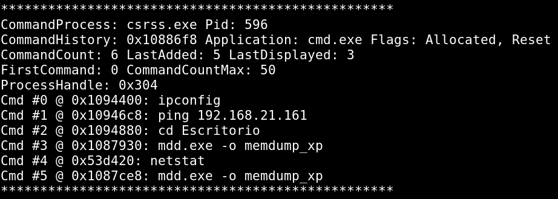
flag: 192.168.21.161
NSA.ZIP[raw]
Para este reto utilizamos volatility y algunos de sus comandos para obtener las flags.
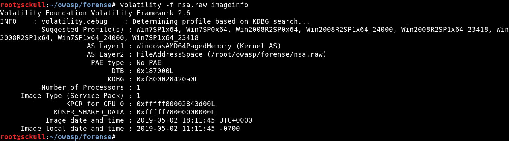
Profile: Win7SP1x64
HASH NTLM
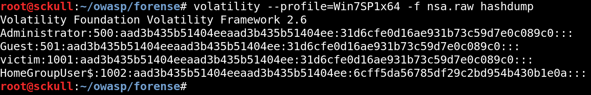
flag:31d6cfe0d16ae931b73c59d7e0c089c0
USER
flag: victim
PID
Pid del proceso wmpnetwk.exe.

flag: 2464
SIDs
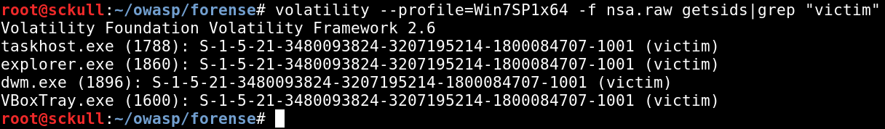
flag: S-1-5-21-3480093824-3207195214-1800084707-1001
COMPUTER NAME

flag:VICTIM-PC
OSINT
IP NSA
Utilizamos algunas paginas para obtener informacion del historial de IPs de nsa.gov.
Nuestra flag: flag{23.196.119.211}
23.196.119.211 United States Akamai Technologies, Inc. 2016-08-25
SEXY
Utilizamos Google Images para hacer una busqueda de la imagen e informacion.
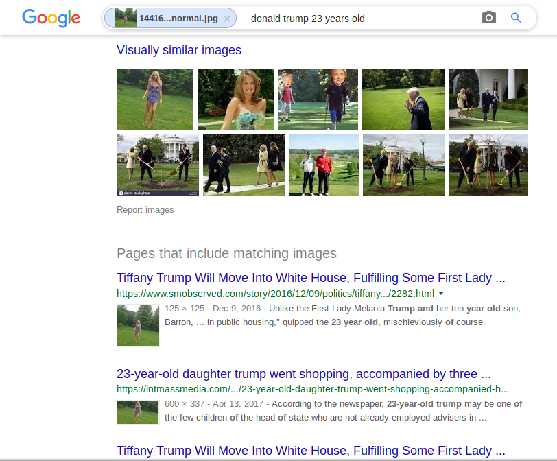

flag: tiffanytrump
STUX
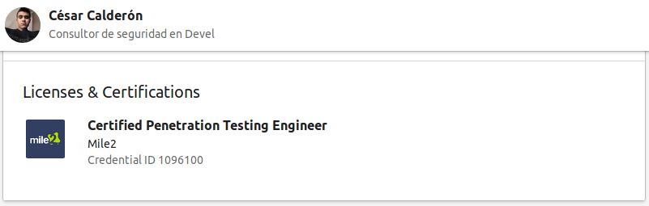
flag: 1096100
Networking
NETWORKING1
Utilizamos Wireshark y un filtro para el puerto 21 FTP.
- tcp.port==21
- ftp
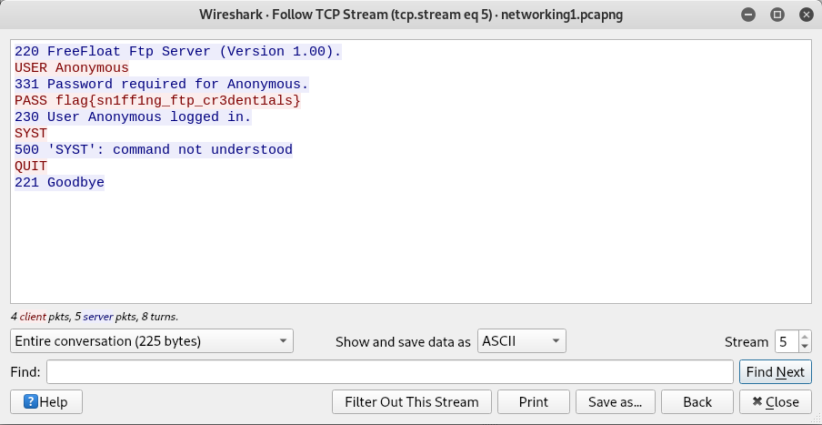
flag{sn1ff1ng_ftp_cr3dent1als}
NETWORKING2
- http.request.method == “POST”

flag{http_1nsecure_commun1cat1on}